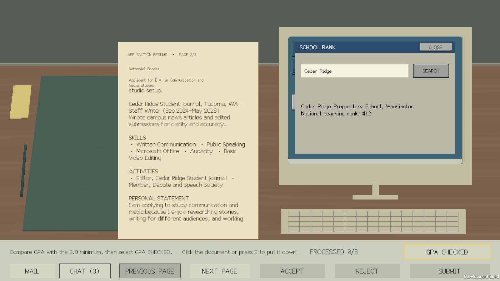
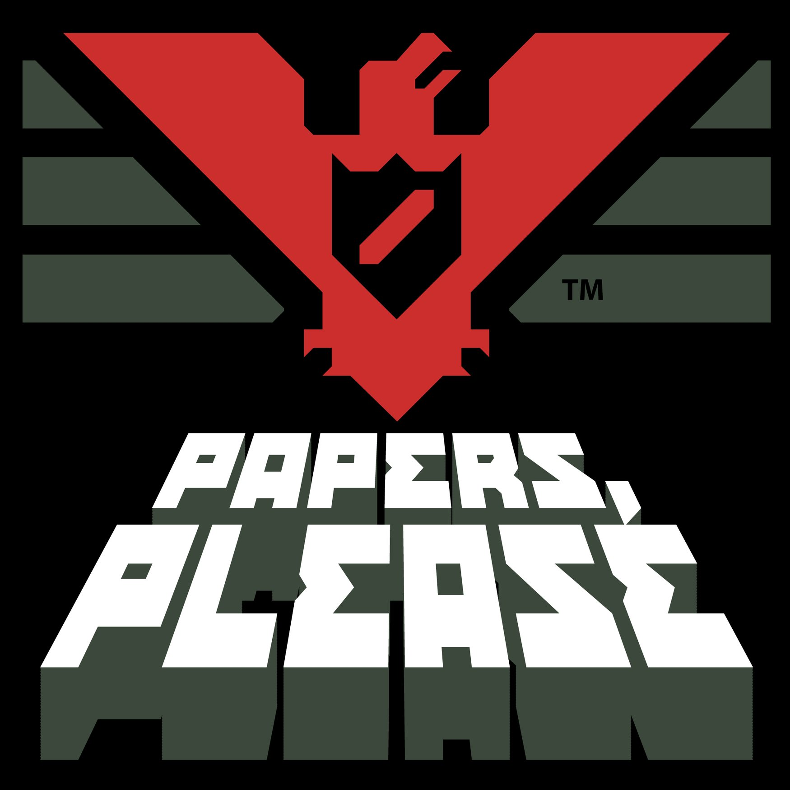
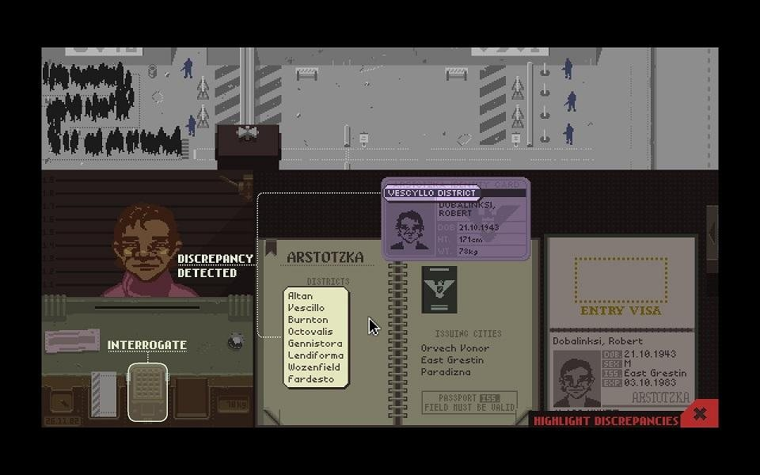
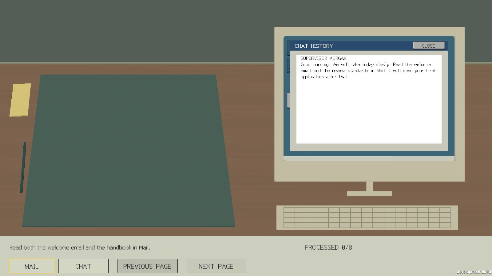
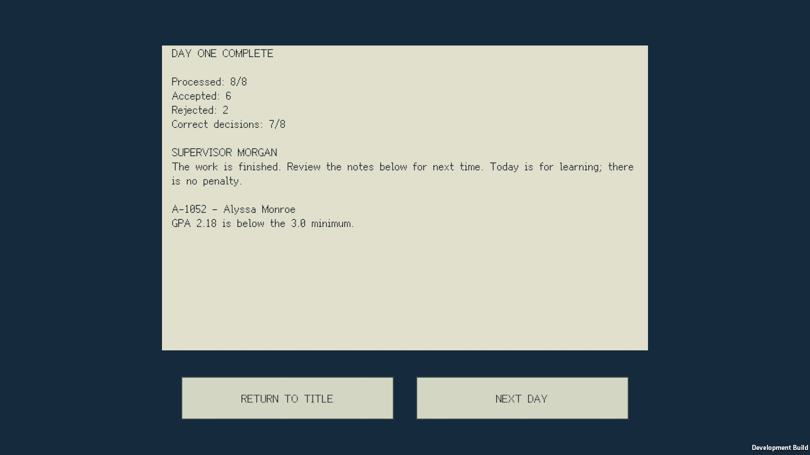
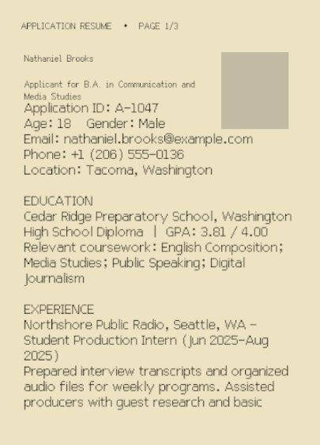
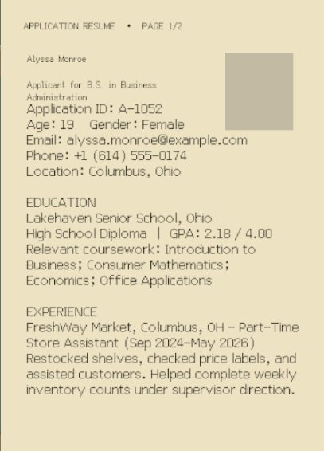
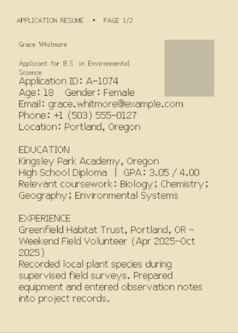

Admission Desk
An admissions desk simulation
You work in admissions at a fictional university. A paper application lands on your desk. Check the school rank and GPA, then decide which stamp to use.
I developed the design and built the prototype in Unity 6 and C#. The same routine that teaches the rules on the first day later gives a supervisor a way to pressure you into breaking them.
The original idea
Inspired by Papers, Please, I imagined a university where applicants came from different planets. Grades, species and rules handed down by senior administrators could all affect the decision at my desk.

Gameplay influence
In Papers, Please, checking a document is the main action. A discrepancy changes what the player can do, and the stamp makes the decision final. I brought that sequence to a university admissions desk: compare a claim with a second source, make a decision, then see what happens when someone asks you to set the rules aside.


Papers, Please (2013) · Lucas Pope / 3909 LLC
Designing the admissions desk
I wanted the player to form a habit before testing it. The paper holds the applicant's claims. The computer gives the player a place to check them. The stamp turns that comparison into a decision the game can remember.
For the workstation I looked at the thick bezel and recessed screen of a Compaq Presario. The window controls drew on retro Windows interfaces. I kept the computer facing the player for reading and clicking, while the mat and keyboard recede toward the wall.
Visual references
Compaq Presario · Centre for Computing History
Retro Windows GUI · comp3interactive

Learning to review a file
The first application teaches the sequence: pick up the paper, check the school rank and GPA, then stamp and submit. After five paper applications and three delivered by email, the supervisor reviews the player's decisions.

In this run, the player approved an applicant whose GPA was below 3.0. The supervisor flags the exact rule at day end. Mistakes carry no penalty on the teaching day.
The player can then continue with Next Day or return to the title screen.
Three applications, one layout
The same prefab handles short and long applications. Nathaniel's full record spans three pages. Alyssa and Grace show why a passing school rank is only one part of the decision.



How the resume prefab works
Each applicant is a ResumeData asset. Names, GPA, work history and other content live in the asset. The ResumeWindow prefab holds the paper layout and its UI references.
When the active application changes, ResumeSpawner creates a new instance of the prefab and passes in that applicant's data. ResumeView binds it to the paper. The spawner carries over the previous position, so the next file opens in the same place.
ResumeSpawner · from the queue to the desk
if (ActiveResumeView != null)
{
sharedResumePosition = ActiveResumeView.transform.position;
spawnPosition = sharedResumePosition;
ActiveResumeView.gameObject.SetActive(false);
Destroy(ActiveResumeView.gameObject);
ActiveResumeView = null;
}
Transform spawnParent = windowLayer != null
? windowLayer : transform;
ActiveResumeView = Instantiate(resumeWindowPrefab, spawnParent);
ActiveResumeView.Initialize(resumeData);
ActiveResumeView.transform.position = spawnPosition;
ActiveResumeViewChanged?.Invoke(ActiveResumeView);
From seven days to three
The first design spread the pressure across seven days and included rent, investing, debt and a longer investigation. I narrowed the demo to the part that makes the desk work matter: learn the rules, face one exception, then answer for the decision.
Day 1 · Learn the rules
Eight teaching and practice applications introduce ranking, GPA and the submission routine.
Day 2 · Face the referral
Linkedout adds a second source to check employment claims. A supervisor wants a referred applicant to go through.
Day 3 · Answer the auditor
The final question can lead to staying, being fired, or leaving. Earlier choices change the context of the audit.
The rules behind the stamp
School rank and GPA are deliberately easy to state. They are harder to apply while reading separate interfaces and handling borderline files.
On the teaching day, a rank of 100 and a GPA of 3.00 pass. A rank of 101 or a GPA of 2.90 fails even when the other value passes. Linkedout later introduces disputed records as a separate reason to reject.
ReviewRuleSet · acceptance and record checks
public bool ShouldAccept(ResumeData resume, int schoolRank)
{
return resume != null && schoolRank > 0 &&
schoolRank <= maximumSchoolRank &&
resume.TryGetGpa(out float gpa) &&
gpa >= minimumGpa && !HasDisputedRecord(resume);
}
public static bool HasDisputedRecord(ResumeData resume)
{
var records = resume != null ? resume.Linkedout : null;
if (records == null) return false;
foreach (var record in records)
if (record != null &&
record.Status != LinkedoutStatus.Confirmed)
return true;
return false;
}
Making the referral matter later
The referral needs to outlast its place in the application queue. The controller records whether it was accepted and reads that flag during the Day 3 audit.
Confessing leads to staying. Hiding the decision can get the player fired if they accepted the referral. Leaving is always a separate exit. The audit also changes its opening depending on whether the player checked a previous record.
Day 3 · the ending decision
if (leave)
{
ShowEnding("audit.leave.reply", "ending.run");
return;
}
if (confess)
{
DayProgress.Confessed = true;
ShowEnding("audit.confess.reply", "ending.clean");
return;
}
ShowEnding("audit.hide.reply",
DayProgress.ReferralAccepted
? "ending.fired" : "ending.clean");
Where I want to take the full game
A university with competing rules
I want to bring back the interplanetary university from the original design. Applicants would arrive from different planets, and the administration could issue policies that weigh their species alongside their grades. I want the files to show how those policies affect individual applicants.
One case could meet the academic requirements while a new directive tells the reviewer to turn it down. That kind of conflict would let the player learn about the world through the decisions they make at the desk.
Financial pressure and phone calls
I imagined the reviewer facing money problems of their own while trading stocks. A phone call could let them blackmail someone, or put them on the receiving end of blackmail. I want those calls to give the player a reason to weigh what they know about an applicant against what they need outside work.
I would first prototype one call that refers back to a decision the player made. From there, I would connect financial choices, what the player reveals or conceals, and the consequences at work to different endings.